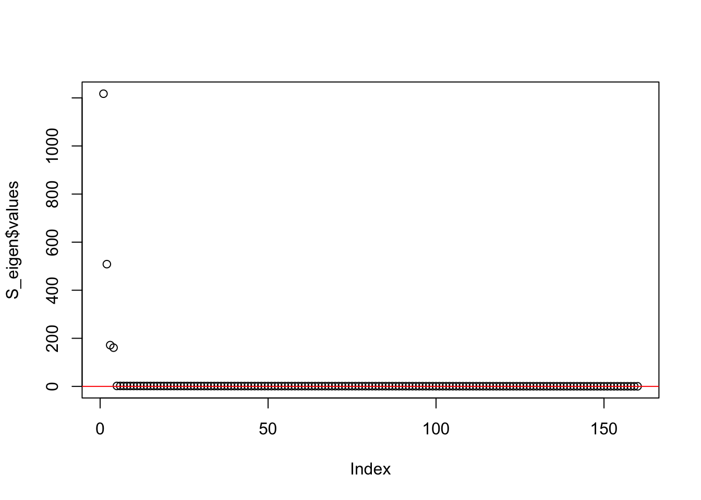
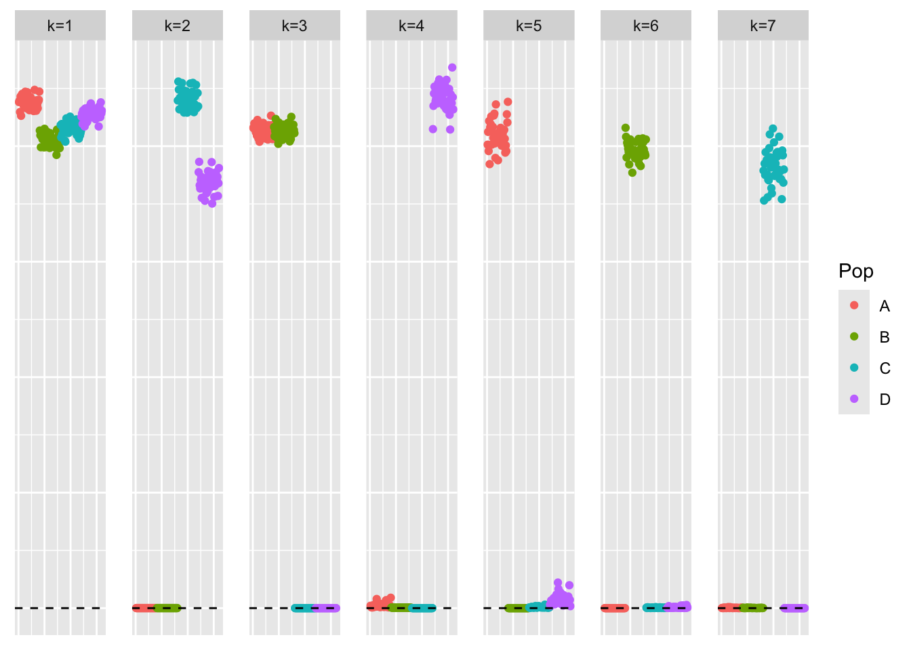
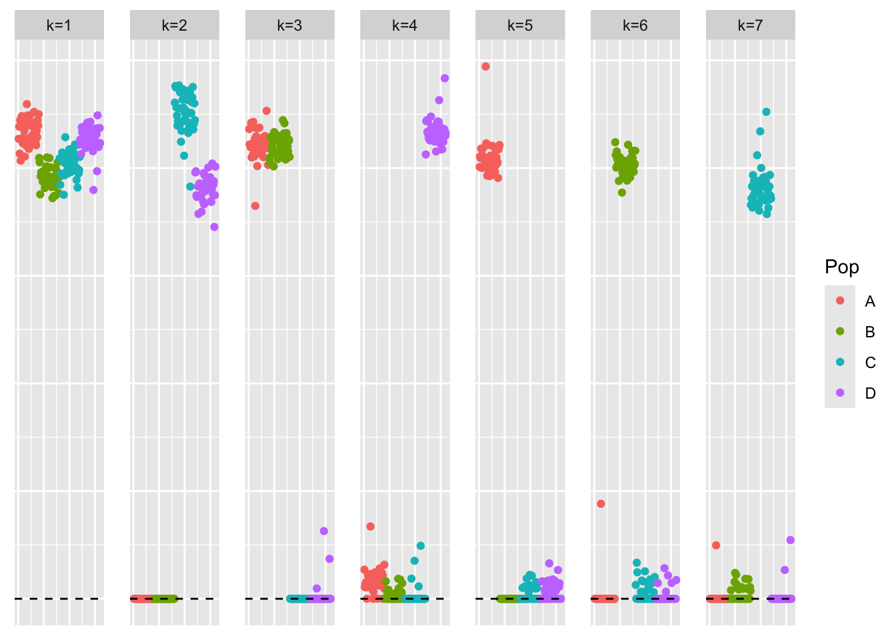
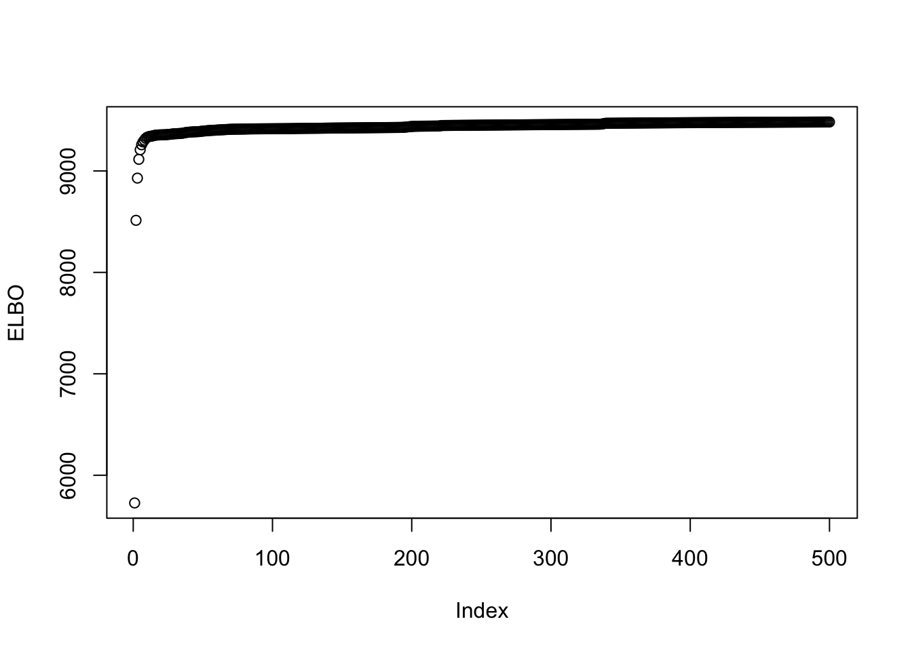
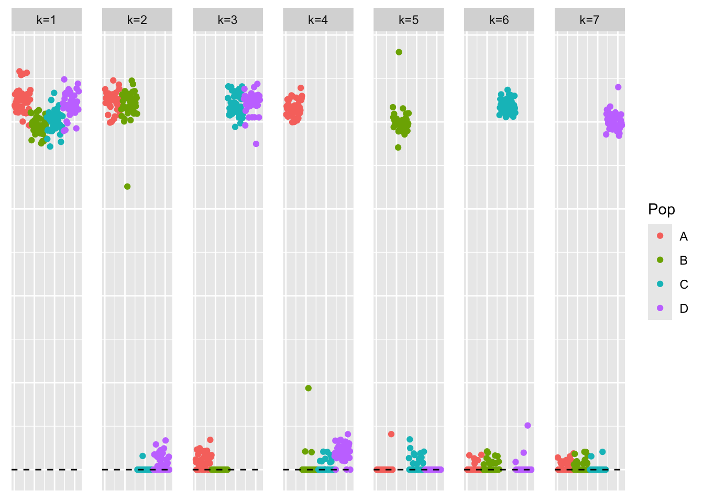
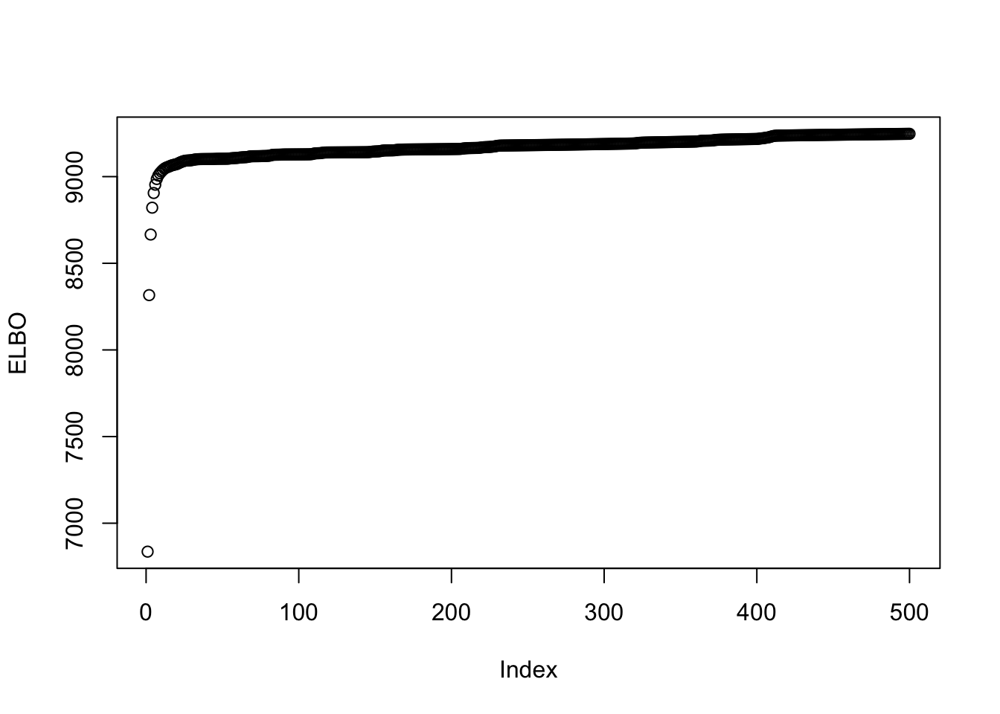

symebcovmf_point_exp_backfit_tree
Annie Xie
2025-06-17
Last updated: 2025-06-24
Checks: 7 0
Knit directory:
symmetric_covariance_decomposition/
This reproducible R Markdown analysis was created with workflowr (version 1.7.1). The Checks tab describes the reproducibility checks that were applied when the results were created. The Past versions tab lists the development history.
Great! Since the R Markdown file has been committed to the Git repository, you know the exact version of the code that produced these results.
Great job! The global environment was empty. Objects defined in the global environment can affect the analysis in your R Markdown file in unknown ways. For reproduciblity it’s best to always run the code in an empty environment.
The command set.seed(20250408) was run prior to running
the code in the R Markdown file. Setting a seed ensures that any results
that rely on randomness, e.g. subsampling or permutations, are
reproducible.
Great job! Recording the operating system, R version, and package versions is critical for reproducibility.
Nice! There were no cached chunks for this analysis, so you can be confident that you successfully produced the results during this run.
Great job! Using relative paths to the files within your workflowr project makes it easier to run your code on other machines.
Great! You are using Git for version control. Tracking code development and connecting the code version to the results is critical for reproducibility.
The results in this page were generated with repository version be00623. See the Past versions tab to see a history of the changes made to the R Markdown and HTML files.
Note that you need to be careful to ensure that all relevant files for
the analysis have been committed to Git prior to generating the results
(you can use wflow_publish or
wflow_git_commit). workflowr only checks the R Markdown
file, but you know if there are other scripts or data files that it
depends on. Below is the status of the Git repository when the results
were generated:
Ignored files:
Ignored: .DS_Store
Ignored: .Rhistory
Untracked files:
Untracked: analysis/symebcovmf_laplace_split_init_tree_exploration.Rmd
Note that any generated files, e.g. HTML, png, CSS, etc., are not included in this status report because it is ok for generated content to have uncommitted changes.
These are the previous versions of the repository in which changes were
made to the R Markdown
(analysis/symebcovmf_point_exp_backfit_tree.Rmd) and HTML
(docs/symebcovmf_point_exp_backfit_tree.html) files. If
you’ve configured a remote Git repository (see
?wflow_git_remote), click on the hyperlinks in the table
below to view the files as they were in that past version.
| File | Version | Author | Date | Message |
|---|---|---|---|---|
| Rmd | be00623 | Annie Xie | 2025-06-24 | Add analysis of point exp backfit in tree setting |
Introduction
In this analysis, we explore symEBcovMF (with backfit) with the point-exponential prior in the tree setting.
Motivation
I am interested in comparing how greedy symEBcovMF + backfit with the point-exponential prior compares with (backfit) symEBcovMF with the point-Laplace plus splitting initialization. The point-Laplace plus splitting initialization procedure is used in GBCD, and we’ve found it to work well empirically. However, it is a complicated procedure. Therefore, I want to see if the simpler procedure of greedy symEBcovMF + backfit with the point-exponential prior also works.
Packages and Functions
library(ebnm)
library(pheatmap)
library(ggplot2)source('code/visualization_functions.R')
source('code/symebcovmf_functions.R')compute_L2_fit <- function(est, dat){
score <- sum((dat - est)^2) - sum((diag(dat) - diag(est))^2)
return(score)
}compute_crossprod_similarity <- function(est, truth){
K_est <- ncol(est)
K_truth <- ncol(truth)
n <- nrow(est)
#if estimates don't have same number of columns, try padding the estimate with zeros and make cosine similarity zero
if (K_est < K_truth){
est <- cbind(est, matrix(rep(0, n*(K_truth-K_est)), nrow = n))
}
if (K_est > K_truth){
truth <- cbind(truth, matrix(rep(0, n*(K_est - K_truth)), nrow = n))
}
#normalize est and truth
norms_est <- apply(est, 2, function(x){sqrt(sum(x^2))})
norms_est[norms_est == 0] <- Inf
norms_truth <- apply(truth, 2, function(x){sqrt(sum(x^2))})
norms_truth[norms_truth == 0] <- Inf
est_normalized <- t(t(est)/norms_est)
truth_normalized <- t(t(truth)/norms_truth)
#compute matrix of cosine similarities
cosine_sim_matrix <- abs(crossprod(est_normalized, truth_normalized))
assignment_problem <- lpSolve::lp.assign(t(cosine_sim_matrix), direction = "max")
return((1/K_truth)*assignment_problem$objval)
}Backfit Functions
optimize_factor <- function(R, ebnm_fn, maxiter, tol, v_init, lambda_k, R2k, n, KL){
R2 <- R2k - lambda_k^2
resid_s2 <- estimate_resid_s2(n = n, R2 = R2)
rank_one_KL <- 0
curr_elbo <- -Inf
obj_diff <- Inf
fitted_g_k <- NULL
iter <- 1
vec_elbo_full <- NULL
v <- v_init
while((iter <= maxiter) && (obj_diff > tol)){
# update l; power iteration step
v.old <- v
x <- R %*% v
e <- ebnm_fn(x = x, s = sqrt(resid_s2), g_init = fitted_g_k)
scaling_factor <- sqrt(sum(e$posterior$mean^2) + sum(e$posterior$sd^2))
if (scaling_factor == 0){ # check if scaling factor is zero
scaling_factor <- Inf
v <- e$posterior$mean/scaling_factor
print('Warning: scaling factor is zero')
break
}
v <- e$posterior$mean/scaling_factor
# update lambda and R2
lambda_k.old <- lambda_k
lambda_k <- max(as.numeric(t(v) %*% R %*% v), 0)
R2 <- R2k - lambda_k^2
#store estimate for g
fitted_g_k.old <- fitted_g_k
fitted_g_k <- e$fitted_g
# store KL
rank_one_KL.old <- rank_one_KL
rank_one_KL <- as.numeric(e$log_likelihood) +
- normal_means_loglik(x, sqrt(resid_s2), e$posterior$mean, e$posterior$mean^2 + e$posterior$sd^2)
# update resid_s2
resid_s2.old <- resid_s2
resid_s2 <- estimate_resid_s2(n = n, R2 = R2) # this goes negative?????
# check convergence - maybe change to rank-one obj function
curr_elbo.old <- curr_elbo
curr_elbo <- compute_elbo(resid_s2 = resid_s2,
n = n,
KL = c(KL, rank_one_KL),
R2 = R2)
if (iter > 1){
obj_diff <- curr_elbo - curr_elbo.old
}
if (obj_diff < 0){ # check if convergence_val < 0
v <- v.old
resid_s2 <- resid_s2.old
rank_one_KL <- rank_one_KL.old
lambda_k <- lambda_k.old
curr_elbo <- curr_elbo.old
fitted_g_k <- fitted_g_k.old
print(paste('elbo decreased by', abs(obj_diff)))
break
}
vec_elbo_full <- c(vec_elbo_full, curr_elbo)
iter <- iter + 1
}
return(list(v = v, lambda_k = lambda_k, resid_s2 = resid_s2, curr_elbo = curr_elbo, vec_elbo_full = vec_elbo_full, fitted_g_k = fitted_g_k, rank_one_KL = rank_one_KL))
}#nullcheck function
nullcheck_factors <- function(sym_ebcovmf_obj, L2_tol = 10^(-8)){
null_lambda_idx <- which(sym_ebcovmf_obj$lambda == 0)
factor_L2_norms <- apply(sym_ebcovmf_obj$L_pm, 2, function(v){sqrt(sum(v^2))})
null_factor_idx <- which(factor_L2_norms < L2_tol)
null_idx <- unique(c(null_lambda_idx, null_factor_idx))
keep_idx <- setdiff(c(1:length(sym_ebcovmf_obj$lambda)), null_idx)
if (length(keep_idx) < length(sym_ebcovmf_obj$lambda)){
#remove factors
sym_ebcovmf_obj$L_pm <- sym_ebcovmf_obj$L_pm[,keep_idx]
sym_ebcovmf_obj$lambda <- sym_ebcovmf_obj$lambda[keep_idx]
sym_ebcovmf_obj$KL <- sym_ebcovmf_obj$KL[keep_idx]
sym_ebcovmf_obj$fitted_gs <- sym_ebcovmf_obj$fitted_gs[keep_idx]
}
#shouldn't need to recompute objective function or other things
return(sym_ebcovmf_obj)
}sym_ebcovmf_backfit <- function(S, sym_ebcovmf_obj, ebnm_fn, backfit_maxiter = 100, backfit_tol = 10^(-8), optim_maxiter= 500, optim_tol = 10^(-8)){
K <- length(sym_ebcovmf_obj$lambda)
iter <- 1
obj_diff <- Inf
sym_ebcovmf_obj$backfit_vec_elbo_full <- NULL
sym_ebcovmf_obj$backfit_iter_elbo_vec <- NULL
# refit lambda
sym_ebcovmf_obj <- refit_lambda(S, sym_ebcovmf_obj, maxiter = 25)
while((iter <= backfit_maxiter) && (obj_diff > backfit_tol)){
# print(iter)
obj_old <- sym_ebcovmf_obj$elbo
# loop through each factor
for (k in 1:K){
# print(k)
# compute residual matrix
R <- S - tcrossprod(sym_ebcovmf_obj$L_pm[,-k] %*% diag(sqrt(sym_ebcovmf_obj$lambda[-k]), ncol = (K-1)))
R2k <- compute_R2(S, sym_ebcovmf_obj$L_pm[,-k], sym_ebcovmf_obj$lambda[-k], (K-1)) #this is right but I have one instance where the values don't match what I expect
# optimize factor
factor_proposed <- optimize_factor(R, ebnm_fn, optim_maxiter, optim_tol, sym_ebcovmf_obj$L_pm[,k], sym_ebcovmf_obj$lambda[k], R2k, sym_ebcovmf_obj$n, sym_ebcovmf_obj$KL[-k])
# update object
sym_ebcovmf_obj$L_pm[,k] <- factor_proposed$v
sym_ebcovmf_obj$KL[k] <- factor_proposed$rank_one_KL
sym_ebcovmf_obj$lambda[k] <- factor_proposed$lambda_k
sym_ebcovmf_obj$resid_s2 <- factor_proposed$resid_s2
sym_ebcovmf_obj$fitted_gs[[k]] <- factor_proposed$fitted_g_k
sym_ebcovmf_obj$elbo <- factor_proposed$curr_elbo
sym_ebcovmf_obj$backfit_vec_elbo_full <- c(sym_ebcovmf_obj$backfit_vec_elbo_full, factor_proposed$vec_elbo_full)
#print(sym_ebcovmf_obj$elbo)
sym_ebcovmf_obj <- refit_lambda(S, sym_ebcovmf_obj) # add refitting step?
#print(sym_ebcovmf_obj$elbo)
}
sym_ebcovmf_obj$backfit_iter_elbo_vec <- c(sym_ebcovmf_obj$backfit_iter_elbo_vec, sym_ebcovmf_obj$elbo)
iter <- iter + 1
obj_diff <- abs(sym_ebcovmf_obj$elbo - obj_old)
# need to add check if it is negative?
}
# nullcheck
sym_ebcovmf_obj <- nullcheck_factors(sym_ebcovmf_obj)
return(sym_ebcovmf_obj)
}Data Generation
To test this procedure, I will apply it to the tree-structured dataset.
sim_4pops <- function(args) {
set.seed(args$seed)
n <- sum(args$pop_sizes)
p <- args$n_genes
FF <- matrix(rnorm(7 * p, sd = rep(args$branch_sds, each = p)), ncol = 7)
# if (args$constrain_F) {
# FF_svd <- svd(FF)
# FF <- FF_svd$u
# FF <- t(t(FF) * branch_sds * sqrt(p))
# }
LL <- matrix(0, nrow = n, ncol = 7)
LL[, 1] <- 1
LL[, 2] <- rep(c(1, 1, 0, 0), times = args$pop_sizes)
LL[, 3] <- rep(c(0, 0, 1, 1), times = args$pop_sizes)
LL[, 4] <- rep(c(1, 0, 0, 0), times = args$pop_sizes)
LL[, 5] <- rep(c(0, 1, 0, 0), times = args$pop_sizes)
LL[, 6] <- rep(c(0, 0, 1, 0), times = args$pop_sizes)
LL[, 7] <- rep(c(0, 0, 0, 1), times = args$pop_sizes)
E <- matrix(rnorm(n * p, sd = args$indiv_sd), nrow = n)
Y <- LL %*% t(FF) + E
YYt <- (1/p)*tcrossprod(Y)
return(list(Y = Y, YYt = YYt, LL = LL, FF = FF, K = ncol(LL)))
}sim_args = list(pop_sizes = rep(40, 4), n_genes = 1000, branch_sds = rep(2,7), indiv_sd = 1, seed = 1)
sim_data <- sim_4pops(sim_args)This is a heatmap of the scaled Gram matrix:
plot_heatmap(sim_data$YYt, colors_range = c('blue','gray96','red'), brks = seq(-max(abs(sim_data$YYt)), max(abs(sim_data$YYt)), length.out = 50))
This is a scatter plot of the true loadings matrix:
pop_vec <- c(rep('A', 40), rep('B', 40), rep('C', 40), rep('D', 40))
plot_loadings(sim_data$LL, pop_vec)
This is a plot of the eigenvalues of the Gram matrix:
S_eigen <- eigen(sim_data$YYt)
plot(S_eigen$values) + abline(a = 0, b = 0, col = 'red')
integer(0)This is the minimum eigenvalue:
min(S_eigen$values)[1] 0.3724341symEBcovMF with point-exponential
First, we start with running greedy symEBcovMF with the point-exponential prior.
symebcovmf_fit <- sym_ebcovmf_fit(S = sim_data$YYt, ebnm_fn = ebnm::ebnm_point_exponential, K = 7, maxiter = 500, rank_one_tol = 10^(-8), tol = 10^(-8), refit_lam = TRUE)This is a scatter plot of \(\hat{L}_{pt-exp}\), the estimate from symEBcovMF:
bal_pops <- c(rep('A', 40), rep('B', 40), rep('C', 40), rep('D', 40))
plot_loadings(symebcovmf_fit$L_pm %*% diag(sqrt(symebcovmf_fit$lambda)), bal_pops)
This is the objective function value attained:
symebcovmf_fit$elbo[1] -11576.24This is the crossproduct similarity value:
compute_crossprod_similarity(symebcovmf_fit$L_pm, sim_data$LL)[1] 0.9990582Observations
The estimate from greedy symEBcovMF with point-exponential prior generally looks like a tree – there is one intercept factor, two factors corresponding to branch effects, and four factors corresponding primarily to population effects. Some of the population effect factors have very small non-zero loadings for members in other populations. But overall, the estimate does a good job at capturing the main tree components.
Additional Backfit
Now, we run additional backfit. This is the code for the backfit:
symebcovmf_fit_backfit <- sym_ebcovmf_backfit(sim_data$YYt, symebcovmf_fit, ebnm_fn = ebnm_point_exponential, backfit_maxiter = 500)This is a scatter plot of \(\hat{L}_{pt-exp-backfit}\), the estimate from symEBcovMF with backfit:
bal_pops <- c(rep('A', 40), rep('B', 40), rep('C', 40), rep('D', 40))
plot_loadings(symebcovmf_fit_backfit$L_pm %*% diag(sqrt(symebcovmf_fit_backfit$lambda)), bal_pops)
This is the objective function value attained:
symebcovmf_fit_backfit$elbo[1] 9482.731This is a plot of the progression of the ELBO:
plot(symebcovmf_fit_backfit$backfit_iter_elbo_vec, ylab = 'ELBO')
This is the crossproduct similarity value:
compute_crossprod_similarity(symebcovmf_fit_backfit$L_pm, sim_data$LL)[1] 0.9982093Interestingly, the backfit made the factors less sparse. I would expect the backfit to find sparser representations since I expect the sparse representation to have a higher objective function value. I also saw these small non-zero loadings in the estimates from GBCD and symEBcovMF initialized with the point-Laplace fit plus splitting. Perhaps they are a result of model misspecification with regards to the noise?
Note: I tried running the backfit for more iterations, e.g. 10,000 iterations, and found that the estimate looked similar. A small number of samples had changed loading values in each factor, but the main components remained intact.
symEBcovMF backfit initialized with true loadings value
To test if symEBcovMF prefers the estimate with small non-zero loadings, I try running the backfit from the true loadings matrix. I suspect we will see an estimate similar to that of the previous section since the greedy symEBcovMF estimate was pretty similar to the true loadings matrix.
First, we initialize a symEBcovMF object using the true \(L\).
symebcovmf_true_init_obj <- sym_ebcovmf_init(sim_data$YYt)
true_L_normalized <- apply(sim_data$LL, 2, function(x){x/sqrt(sum(x^2))})
symebcovmf_true_init_obj$L_pm <- true_L_normalized
symebcovmf_true_init_obj$lambda <- rep(1, ncol(sim_data$LL))
symebcovmf_true_init_obj$resid_s2 <- estimate_resid_s2(S = sim_data$YYt,
L = symebcovmf_true_init_obj$L_pm,
lambda = symebcovmf_true_init_obj$lambda,
n = nrow(sim_data$Y),
K = length(symebcovmf_true_init_obj$lambda))
symebcovmf_true_init_obj$elbo <- compute_elbo(S = sim_data$YYt,
L = symebcovmf_true_init_obj$L_pm,
lambda = symebcovmf_true_init_obj$lambda,
resid_s2 = symebcovmf_true_init_obj$resid_s2,
n = nrow(sim_data$Y),
K = length(symebcovmf_true_init_obj$lambda),
KL = rep(0, length(symebcovmf_true_init_obj$lambda)))I refit the lambda values keeping the factors fixed.
symebcovmf_true_init_obj <- refit_lambda(S = sim_data$YYt, symebcovmf_true_init_obj, maxiter = 500)Now, we run the backfit with point-exponential prior.
symebcovmf_true_init_backfit <- sym_ebcovmf_backfit(sim_data$YYt, symebcovmf_true_init_obj, ebnm_fn = ebnm::ebnm_point_exponential, backfit_maxiter = 500)This is a plot of the loadings estimate, \(\hat{L}_{backfit-true-init}\).
bal_pops <- c(rep('A', 40), rep('B', 40), rep('C', 40), rep('D', 40))
plot_loadings(symebcovmf_true_init_backfit$L_pm %*% diag(sqrt(symebcovmf_true_init_backfit$lambda)), bal_pops)
This is the objective function value:
symebcovmf_true_init_backfit$elbo[1] 9247.092This is a plot of the progression of the ELBO:
plot(symebcovmf_true_init_backfit$backfit_iter_elbo_vec, ylab = 'ELBO')
This is the crossproduct similarity value:
compute_crossprod_similarity(symebcovmf_true_init_backfit$L_pm, sim_data$LL)[1] 0.9989395Observations
The factors in this estimate also have small non-zero loadings. These results suggest that the less-sparse representation has a higher objective function value.
sessionInfo()R version 4.3.2 (2023-10-31)
Platform: aarch64-apple-darwin20 (64-bit)
Running under: macOS 15.4.1
Matrix products: default
BLAS: /Library/Frameworks/R.framework/Versions/4.3-arm64/Resources/lib/libRblas.0.dylib
LAPACK: /Library/Frameworks/R.framework/Versions/4.3-arm64/Resources/lib/libRlapack.dylib; LAPACK version 3.11.0
locale:
[1] en_US.UTF-8/en_US.UTF-8/en_US.UTF-8/C/en_US.UTF-8/en_US.UTF-8
time zone: America/New_York
tzcode source: internal
attached base packages:
[1] stats graphics grDevices utils datasets methods base
other attached packages:
[1] ggplot2_3.5.1 pheatmap_1.0.12 ebnm_1.1-34 workflowr_1.7.1
loaded via a namespace (and not attached):
[1] gtable_0.3.5 xfun_0.48 bslib_0.8.0 processx_3.8.4
[5] lattice_0.22-6 callr_3.7.6 vctrs_0.6.5 tools_4.3.2
[9] ps_1.7.7 generics_0.1.3 tibble_3.2.1 fansi_1.0.6
[13] highr_0.11 pkgconfig_2.0.3 Matrix_1.6-5 SQUAREM_2021.1
[17] RColorBrewer_1.1-3 lifecycle_1.0.4 truncnorm_1.0-9 farver_2.1.2
[21] compiler_4.3.2 stringr_1.5.1 git2r_0.33.0 munsell_0.5.1
[25] getPass_0.2-4 httpuv_1.6.15 htmltools_0.5.8.1 sass_0.4.9
[29] yaml_2.3.10 later_1.3.2 pillar_1.9.0 jquerylib_0.1.4
[33] whisker_0.4.1 cachem_1.1.0 trust_0.1-8 RSpectra_0.16-2
[37] tidyselect_1.2.1 digest_0.6.37 stringi_1.8.4 dplyr_1.1.4
[41] ashr_2.2-66 labeling_0.4.3 splines_4.3.2 rprojroot_2.0.4
[45] fastmap_1.2.0 grid_4.3.2 colorspace_2.1-1 cli_3.6.3
[49] invgamma_1.1 magrittr_2.0.3 utf8_1.2.4 withr_3.0.1
[53] scales_1.3.0 promises_1.3.0 horseshoe_0.2.0 rmarkdown_2.28
[57] httr_1.4.7 deconvolveR_1.2-1 lpSolve_5.6.20 evaluate_1.0.0
[61] knitr_1.48 irlba_2.3.5.1 rlang_1.1.4 Rcpp_1.0.13
[65] mixsqp_0.3-54 glue_1.8.0 rstudioapi_0.16.0 jsonlite_1.8.9
[69] R6_2.5.1 fs_1.6.4